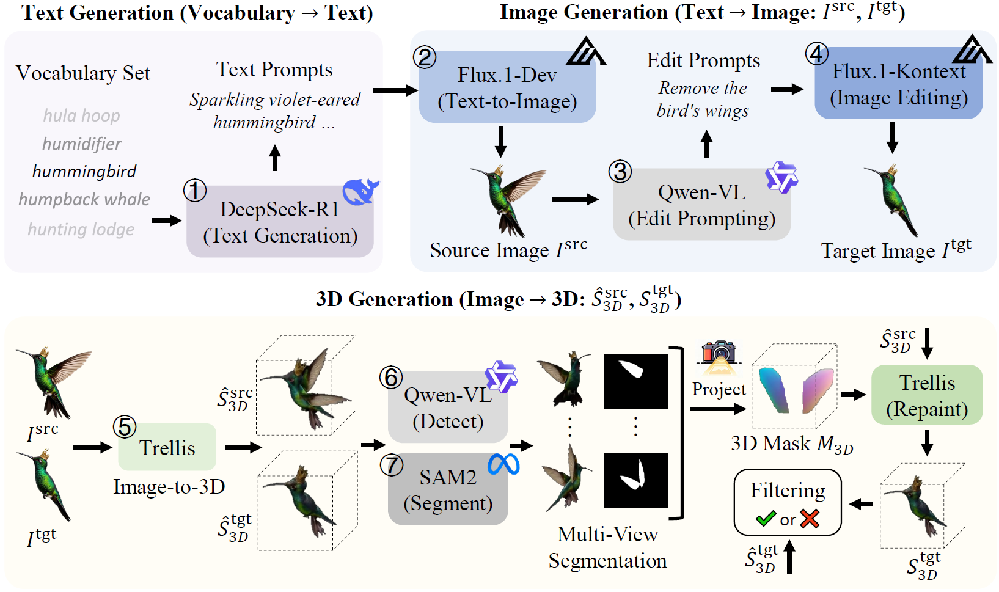
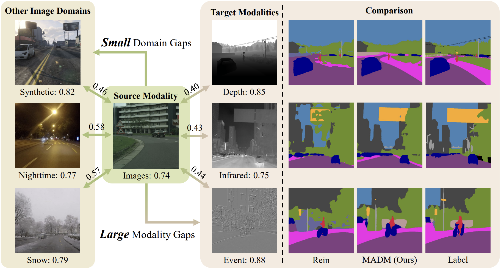
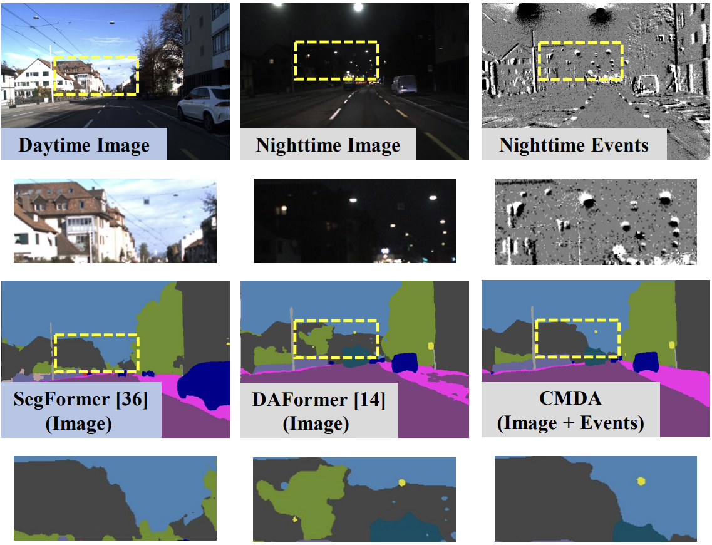
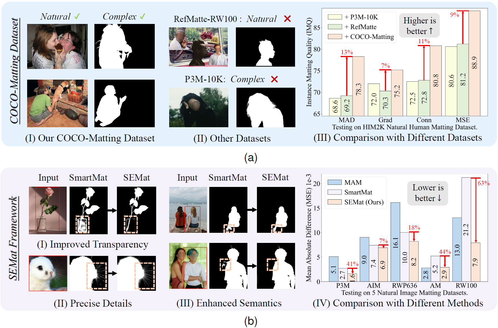
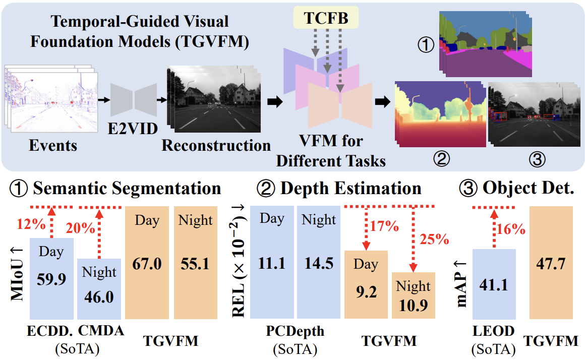
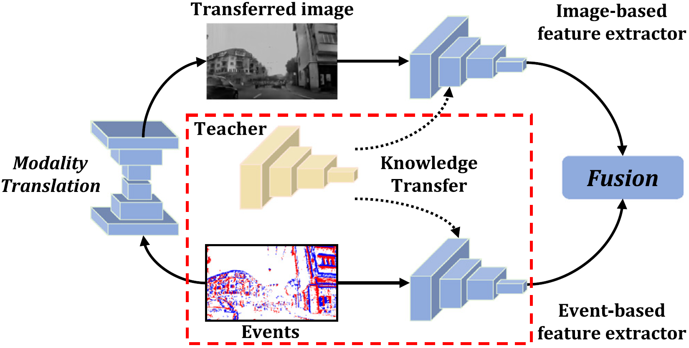

About Me
Ruihao Xia is a PhD student from the East China University of Science and Technology (ECUST) who specializes in the field of computer vision and deep learning. His research is centered on 3D AI Generation, Event-based Vision, Cross-Modality Domain Adaptation, and Semantic Segmentation. Xia received his B.S. in Mechanical Engineering also from ECUST, where he got excellent grades and developed a passion for Computer Vision.
Education
-
★ Surpervised by Prof. Pan Zhou
Research Interests
- 3D AI Generation
-
★ Surpervised by Prof. Yang Tang
Honors and Awards
- 2025.05 Principal Investigator of the Interdisciplinary Innovation and Education-Integration Project, Class IV Peak Discipline of “Intelligent Science and Technology” in Shanghai
- 2025.03 “Zhangjiang Shu Youbo” Ph.D. Cultivation Program in ECUST
Honors and Awards
- 2021 Shanghai Excellent Graduates
- 2020 National Undergraduate Smart Car Competition 2nd Prize
- 2019-2020 National Scholarship
- 2019 Shanghai Undergraduate Creative Robot Competition 2nd Prize
- 2018-2019 National Scholarship
Working Experience
Research & Publications (First Author)
Ruihao Xia, Yang Tang*, Pan Zhou
Under Review 2025
We introduce 3DEditVerse, the largest paired 3D editing benchmark, and propose 3DEditFormer, a mask-free transformer enabling precise, consistent, and scalable 3D edits.
Project Page
Ruihao Xia, Yu Liang, Peng-Tao Jiang, Hao Zhang, Bo Li*, Yang Tang*, Pan Zhou
Neural Information Processing Systems (NeurIPS) 2024
We propose MADM, a diffusion-based framework that leverages text-to-image pre-trained models with pseudo-label stabilization and latent label regression, achieving SoTA semantic segmentation adaptation across image, depth, infrared, and events.
Paper | Code
Ruihao Xia, Chaoqiang Zhao, Meng Zheng, Ziyan Wu, Qiyu Sun, Yang Tang*
International Conference on Computer Vision (ICCV) 2023
We propose CMDA, a cross-modality domain adaptation framework that leverages both images and events with daytime labels, introducing the first image-event nighttime segmentation dataset for evaluation.
Paper | Code
Ruihao Xia, Yu Liang, Peng-Tao Jiang*, Hao Zhang, Qianru Sun, Yang Tang*, Bo Li, Pan Zhou
Submitted to IEEE TCSVT 2025
We introduce COCO-Matting and SEMat, a dataset-method pair that leverages real-world human mattes and a feature/matte-aligned transformer-decoder design with trimap-based regularization.
Paper | Code
Ruihao Xia, Junhong Cai, Luziwei Leng*, Ran Cheng, Yang Tang*, Pan Zhou
Submitted to IEEE TCSVT 2025
We present TGVFM, a temporal-guided framework that integrates pretrained Visual Foundation Models with novel spatiotemporal attention blocks, achieving SoTA gains in event-based semantic seg., depth estimation, and object detection.

Ruihao Xia, Chaoqiang Zhao, Qiyu Sun, Shuang Cao, Yang Tang*
IFAC Control Engineering Practice (CEP) 2023
We propose MTF, a modality translation and fusion framework that distills complementary cross-modality knowledge from image-based teachers to event-based networks, achieving SoTA semantic segmentation in low-light conditions.
Paper